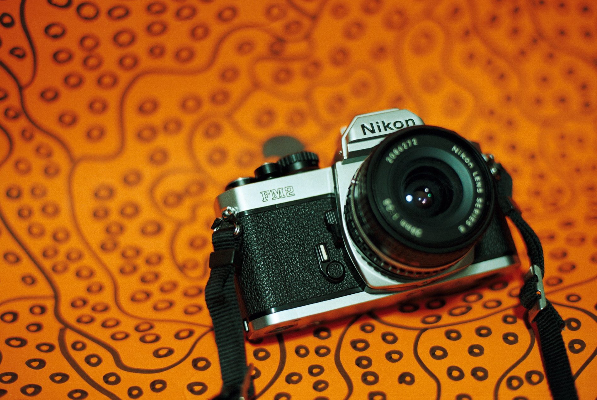

Bienvenidos a la pagina FILM 35mm_120
Que es FILM 35mm_120??¡¡

Es una pagina en la cual quiero mostrales los procesos analogos de una fotografia,
el proceso que nuestros padres utilizaban para tomar fotografias, subire algunas fotos que
yo he realizado con camaras analogas despues de haber pasado por un proceso llamado revelado y digitalizado.
Tambien estare recomendando algunas camaras y dando mi opinion hacerca de la experiencia de uso,
tambien algunos datos de la camara como sus diferentes modelos, su
fecha de creacion, accesorios existentes, fotos que yo he tomado con dichas camaras, etc.
Compartire algunas fotos desde mi cueta de insta con el mismo nombre de la pagina donde tambien
subo fotografias constantemente.
No soy un gran fotografo pero si me interesa este tipo de fotografia ya que es un tipo de fotografia mas
tangible, no estoy para nada peleado con la fotografia digital la utilizo a diario, pero para retratar
a una persona de mi familia le doy un valor mas a lo analogo ya que en primera me gusta mas el tipico y
caracteristico grano de una buena pelicula, en segunda porque al yo estar inmerso en el proceso total desde tomarla
, revelarla y escanearla le doy un valor agregado.